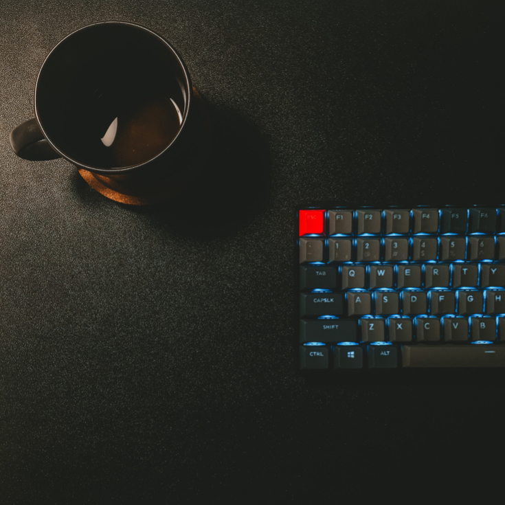

Tja 👋, jag heter Viktor och jag
utvecklar koncept och löser problem

Hur jag kan bidra
Jag är en naturlig problemlösare som oftast jobbar på en nivå där jag kan få överblick av nyttan för slutanvändaren. Det gäller vare sig det handlar om att utveckla människor eller utveckla system.
Jag är en person med många ben att stå på, med en bred erfarenhet och strävar efter att ta lärdom av alla erfarenheter. Som person strävar jag alltid efter att utvecklas, och att bidra till gruppen omkring mig.
Min elitidrottskarriär lärde mig att vara en prestigelös lagspelare. Som säljare har jag vant mig vid att briefa kunder och att söka och verbalisera kundnyttan. Som coach har jag tvingats förtydliga mina budskap och insett hur viktigt det är att också ha roligt på vägen.